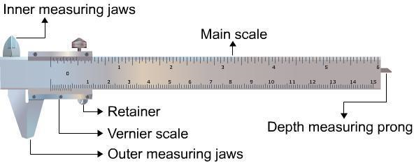

Physics
Measuring the Area of Cylinder Using Vernier Calliper
What is a Vernier Calliper?
A calliper is a device used to measure the distance between two
opposing sides of an object. It can be as simple as a compass
with inward or outward-facing points. First the tips of the
caliper are adjusted to fit across the points to be measured and
the caliper is then removed and the distance between the tips is
measured using a ruler.
The modern Vernier caliper was invented by Joseph R. Brown in
1851. It was the first practical tool for exact measurements
that could be sold at an affordable price to ordinary
machinists. The Vernier Caliper consists of a main scale fitted
with a jaw at one end. Another jaw, containing the Vernier
scale, moves over the main scale. When the two jaws are in
contact, the zero of the main scale and the zero of the Vernier
scale should coincide. If both the zeros do not coincide, there
will be a positive or negative zero error.
Parts of a Vernier Calliper:
1. Main Scale
The main scale consists of a steel metallic strip graduated in centimeters at one edge and in inches at the other edge . It carries the inner and outer measuring jaws. When the two jaws are in contact, the zero of the main scale and the zero of the Vernier scale should coincide. If both the zeros do not coincide, there will be a positive or negative zero error.
2. Vernier Scale
A Vernier scale slides on the strip. It can be fixed in any position by the retainer. On the Vernier scale, 0.9 cm is divided into ten equal parts.
3. Outer Measuring Jaws
The outer measuring jaws helps to take the outer dimension of an object
4. Inner Measuring Jaws
The inner measuring jaws helps to take the inner dimension of an object.
5. Retainer
The retainer helps to retain the object within the jaws of the Vernier calipers.
6. Depth Measuring Prong
The depth measuring prong helps to measure the depth of an object.
Least Count:
The least count or the smallest reading which you can get with the instrument can be calculated as;
OR
First calculate the least count and only then place the object between the two jaws. Record the position of zero of the Vernier scale on the main scale.
Calculating the Reading
When a body is between the jaws of the Vernier Caliper; If the zero of the vernier scale lies ahead of the Nth division of the main scale, then the main scale reading (MSR) is;If nth division of Vernier scale coincides with any division of the main scale, then the Vernier scale reading (VSR) is;
Total Reading:
Finding the Volumes
Volume of a Beaker / CalorimeterVolume of the beaker / calorimeter = internal area of the cross section x depth
This can be expressed as; where 'D' is the internal diameter of beaker / calorimeter and 'd' the depth of beaker / calorimeter. Volume of a Sphere where 'r' is the radius of the sphere.
Volume of a Rectangular Block
MATERIALS REQUIRED:
- Vernier callipers.
- A spherical body ( it can be a pendulum bob)
- A cylinder.
- A small rectangular metallic block of known mass
- A beaker or a calorimeter.